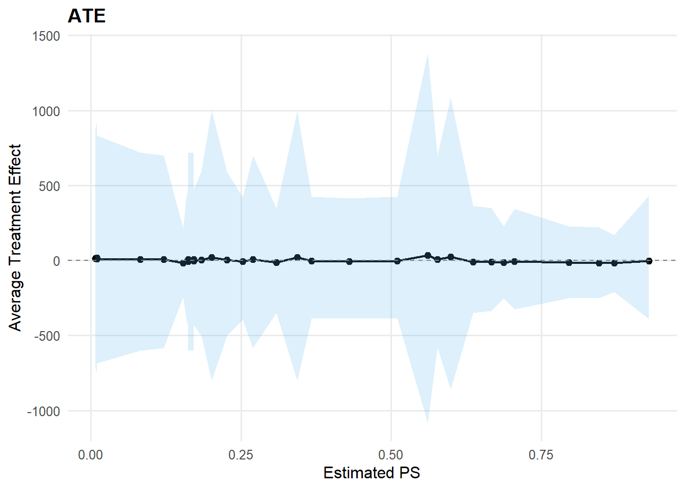
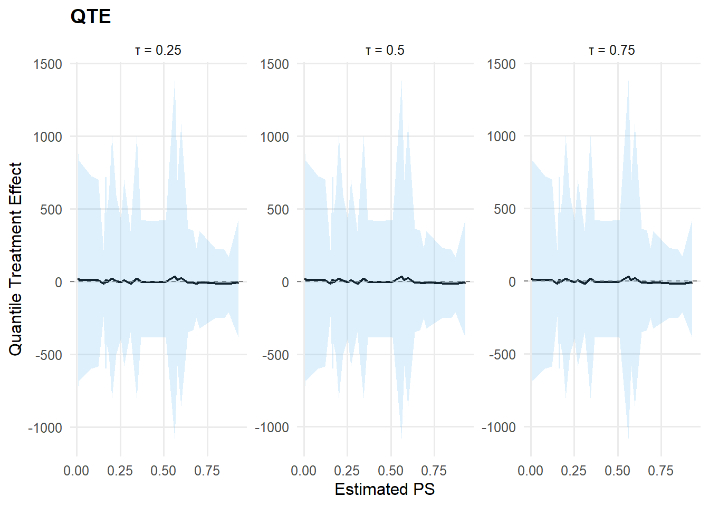

data("mtcars", package = "datasets")
df <- mtcars
y <- df$mpg
X <- df[, c("wt", "hp")]
X <- as.data.frame(X)Advanced: Customization and tuning
Overview
This vignette documents how to construct and run NIMBLE models using the low-level building blocks exported by DPmixGPD. The intended audience is advanced users who want full control of the model specification while still reusing the package’s NIMBLE-ready distributions (mixture kernels and bulk-tail splices) and the standard NIMBLE compilation and MCMC workflow.
The examples emphasize transparency. Each model is specified in nimbleCode{}; constants, data, and initial values are stated explicitly; and the model is compiled and sampled using the canonical NIMBLE sequence.
The vignette covers:
A manual stick-breaking (SB) Normal mixture using
dNormMixas the likelihood.A spliced bulk-tail model (SB + Amoroso + GPD) in which DPmixGPD generates the model code, while the compilation and sampling steps are carried out explicitly to facilitate inspection.
A causal (two-arm) model built via
build_causal_bundle(), followed by downstream summaries via S3 methods such aspredict(),ate(), andqte().
Throughout, the focus is on reproducible model construction and on using the exported NIMBLE distributions directly in the likelihood. In this setting, a ones/zeros trick is not required.
Data
SB Case: Manual Stick-Breaking Model with dNormMix
In this first example we write an SB mixture model by hand and use the exported dNormMix() nimbleFunction as the per-observation log-likelihood. The point is to show that DPmixGPD kernels are ordinary NIMBLE components: you can call them inside your own model code, monitor whatever nodes you like, and control the MCMC configuration exactly as you would in a standalone NIMBLE workflow.
Note on custom likelihoods
NIMBLE can work with user-defined distributions, but for a vignette it is often easier to avoid registration and keep everything “plain” model code. DPmixGPD already exposes the mixture and MixGPD building blocks as NIMBLE distributions (e.g., dNormMix for a Normal mixture and dNormMixGpd for the spliced bulk+GPD version). That means you can write the likelihood directly in nimbleCode using y[i] ~ dNormMix(...) or y[i] ~ dNormMixGpd(...)–no ones/zeros trick is needed here.
Constants, data, and inits
N <- length(y)
K <- 3
constants_sb <- list(N = N, K = K)
data_sb <- list(y = y)
inits_sb <- function() {
list(
alpha = 1,
v = c(rep(0.5, K - 1), 1),
mu = rnorm(K, mean(y), 1),
sigma = rep(sd(y), K)
)
}NIMBLE code
code_sb <- nimble::nimbleCode({
alpha ~ dgamma(1, 1)
for (k in 1:(K - 1)) {
v[k] ~ dbeta(1, alpha)
}
v[K] <- 1
w[1] <- v[1]
for (k in 2:K) {
w[k] <- v[k] * prod(1 - v[1:(k - 1)])
}
for (k in 1:K) {
mu[k] ~ dnorm(0, sd = 5)
sigma[k] ~ dunif(0.1, 5)
}
for (i in 1:N) {
y[i] ~ dNormMix(w = w[1:K], mean = mu[1:K], sd = sigma[1:K])
}
})Compile and run (manual)
Rmodel_sb <- nimble::nimbleModel(
code = code_sb,
constants = constants_sb,
data = data_sb,
inits = inits_sb()
)Defining model [Note] Registering 'dNormMix' as a distribution based on its use in BUGS code. If you make changes to the nimbleFunctions for the distribution, you must call 'deregisterDistributions' before using the distribution in BUGS code for those changes to take effect.Building modelSetting data and initial valuesRunning calculate on model
[Note] Any error reports that follow may simply reflect missing values in model variables.Checking model sizes and dimensionsconf_sb <- nimble::configureMCMC(
Rmodel_sb,
monitors = c("alpha", "v", "w", "mu", "sigma")
)
Rmcmc_sb <- nimble::buildMCMC(conf_sb)
Cmodel_sb <- nimble::compileNimble(Rmodel_sb, showCompilerOutput = FALSE)Compiling
[Note] This may take a minute.
[Note] Use 'showCompilerOutput = TRUE' to see C++ compilation details.Cmcmc_sb <- nimble::compileNimble(Rmcmc_sb, project = Rmodel_sb, showCompilerOutput = FALSE)Compiling
[Note] This may take a minute.
[Note] Use 'showCompilerOutput = TRUE' to see C++ compilation details.samples_sb <- nimble::runMCMC(
Cmcmc_sb,
niter = mcmc$niter,
nburnin = mcmc$nburnin,
thin = mcmc$thin,
nchains = mcmc$nchains,
setSeed = mcmc$seed
)running chain 1...Sample extraction
head(samples_sb[, 1:min(6, ncol(samples_sb))]) alpha mu[1] mu[2] mu[3] sigma[1] sigma[2]
[1,] 0.558 19.1 1.74 -2.52 4.70 4.10
[2,] 0.929 20.1 3.08 -3.56 4.70 4.32
[3,] 0.929 19.9 4.70 -2.15 4.70 4.84
[4,] 0.929 19.8 5.39 -2.01 4.70 4.84
[5,] 0.503 20.4 4.04 -1.89 4.87 3.79
[6,] 0.503 20.4 1.63 -1.87 4.87 2.74summary(samples_sb[, c("alpha", "mu[1]", "mu[2]", "mu[3]")]) alpha mu[1] mu[2] mu[3]
Min. :0.00883 Min. :17.4 Min. :-12.14 Min. :-13.316
1st Qu.:0.30174 1st Qu.:19.0 1st Qu.: -2.05 1st Qu.: -2.632
Median :0.37918 Median :19.6 Median : 1.07 Median : -0.187
Mean :0.48151 Mean :19.5 Mean : 1.02 Mean : 0.727
3rd Qu.:0.62096 3rd Qu.:20.2 3rd Qu.: 4.12 3rd Qu.: 3.902
Max. :1.70027 Max. :21.9 Max. : 16.19 Max. : 18.136 Optional: S3 methods via the DPmixGPD bundle
For comparison, we build a bundle for the same SB Normal mixture and use DPmixGPD’s S3 methods for posterior inference.
bundle_sb <- build_nimble_bundle(
y = y,
X = NULL,
backend = "sb",
kernel = "normal",
GPD = FALSE,
components = K,
mcmc = mcmc
)
fit_sb <- run_mcmc_bundle_manual(bundle_sb, show_progress = FALSE)Defining model [Note] 'P' is provided in 'constants' but not used in the model code and is being ignored.Building modelSetting data and initial valuesChecking model sizes and dimensions [Note] This model is not fully initialized. This is not an error.
To see which variables are not initialized, use model$initializeInfo().
For more information on model initialization, see help(modelInitialization).Checking model calculationsCompiling
[Note] This may take a minute.
[Note] Use 'showCompilerOutput = TRUE' to see C++ compilation details.
Compiling
[Note] This may take a minute.
[Note] Use 'showCompilerOutput = TRUE' to see C++ compilation details. [Warning] To calculate WAIC, set 'WAIC = TRUE', in addition to having enabled WAIC in building the MCMC.running chain 1...Compiling
[Note] This may take a minute.
[Note] Use 'showCompilerOutput = TRUE' to see C++ compilation details.Calculating WAIC.print(bundle_sb)DPmixGPD bundle Field Value Backend Stick-Breaking Process Kernel Normal Distribution Components 3 N 32 X NO GPD FALSE Epsilon 0.025
contains : code, constants, data, dimensions, inits, monitors
summary(bundle_sb)DPmixGPD bundle summary Field Value Backend Stick-Breaking Process Kernel Normal Distribution Components 3 N 32 X NO GPD FALSE Epsilon 0.025
Parameter specification block parameter mode level prior link meta backend info model sb
meta kernel info model normal
meta components info model 3
meta N info model 32
meta P info model 0
concentration alpha dist scalar gamma(shape=1, rate=1)
bulk mean dist component (1:3) normal(mean=0, sd=5)
bulk sd dist component (1:3) gamma(shape=2, rate=1)
notes
stochastic concentration iid across components iid across components
Monitors n = 5 alpha, w[1:3], z[1:32], mean[1:3], sd[1:3]
print(fit_sb)MixGPD fit | backend: Stick-Breaking Process | kernel: Normal Distribution | GPD tail: FALSE n = 32 | components = 3 | epsilon = 0.025 MCMC: niter=600, nburnin=150, thin=2, nchains=1 Fit Use summary() for posterior summaries; plot() for diagnostics; predict() for predictions.
summary(fit_sb)MixGPD summary | backend: Stick-Breaking Process | kernel: Normal Distribution | GPD tail: FALSE | epsilon: 0.025 n = 32 | components = 3 Summary Initial components: 3 | Components after truncation: 1
WAIC: 207.618 lppd: -99.842 | pWAIC: 3.968
Summary table parameter mean sd q0.025 q0.500 q0.975 ess weights[1] 0.985 0.047 0.831 1 1 9.017 alpha 0.421 0.302 0.073 0.348 1.132 46.952 mean[1] 19.332 1.137 17.025 19.323 21.623 153.799 sd[1] 0.031 0.007 0.018 0.03 0.045 225
safe_plot(fit_sb, family = "traceplot")Scale for colour is already present.
Adding another scale for colour, which will replace the existing scale.
pred_sb <- predict(fit_sb, type = "mean", interval = "credible")
head(pred_sb$fit) id estimate lower upper
1 1 19.3 17 21.6SB + GPD Case: Manual Pipeline with Codegen
The second example adds a GPD tail. Rather than writing the full spliced model by hand, we let build_nimble_bundle() generate the NIMBLE code and the supporting objects (constants, data, inits, monitors). The “customization” part is that we then treat those outputs as if you had written them yourself: we construct the nimbleModel, configure and compile the MCMC, run it, and inspect the samples. This is a good pattern when you want a reproducible code generator, but still need low-level access for debugging or extensions.
Specification
param_specs_crp <- list(
bulk = list(
loc = list(
mode = "dist",
dist = "normal",
args = list(mean = 0, sd = 2)
),
scale = list(
mode = "dist",
dist = "gamma",
args = list(shape = 2, rate = 1)
),
shape1 = list(mode = "fixed", value = 1)
),
gpd = list(
threshold = list(
mode = "dist",
dist = "gamma",
args = list(shape = 2, rate = 1)
),
tail_scale = list(
mode = "dist",
dist = "gamma",
args = list(shape = 2, rate = 1)
)
)
)Build bundle and extract pieces
X_crp <- NULL
bundle_crp <- build_nimble_bundle(
y = y,
X = X_crp,
backend = "sb",
kernel = "amoroso",
GPD = TRUE,
components = 5,
param_specs = param_specs_crp,
mcmc = mcmc
)
code_crp <- bundle_crp$code$nimble
constants_crp <- bundle_crp$constants
data_crp <- bundle_crp$data
inits_crp <- if (is.function(bundle_crp$inits_fun)) bundle_crp$inits_fun else bundle_crp$initsCompile and run (manual)
Rmodel_crp <- nimble::nimbleModel(
code = code_crp,
constants = constants_crp,
data = data_crp,
inits = if (is.function(inits_crp)) inits_crp() else inits_crp
)Defining model [Note] 'P' is provided in 'constants' but not used in the model code and is being ignored. [Note] Registering 'dAmorosoGpd' as a distribution based on its use in BUGS code. If you make changes to the nimbleFunctions for the distribution, you must call 'deregisterDistributions' before using the distribution in BUGS code for those changes to take effect.Building modelSetting data and initial valuesRunning calculate on model
[Note] Any error reports that follow may simply reflect missing values in model variables.Checking model sizes and dimensionsconf_crp <- nimble::configureMCMC(
Rmodel_crp,
monitors = bundle_crp$monitors
)
if (!is.null(conf_crp$samplerConfs) && length(conf_crp$samplerConfs) > 0) {
for (i in seq_along(conf_crp$samplerConfs)) {
ctl <- conf_crp$samplerConfs[[i]]$control
if (is.null(ctl)) ctl <- list()
if (is.null(ctl$checkConjugacy)) ctl$checkConjugacy <- FALSE
conf_crp$samplerConfs[[i]]$control <- ctl
}
}
Rmcmc_crp <- nimble::buildMCMC(conf_crp)
Cmodel_crp <- nimble::compileNimble(Rmodel_crp, showCompilerOutput = FALSE)Compiling
[Note] This may take a minute.
[Note] Use 'showCompilerOutput = TRUE' to see C++ compilation details.Cmcmc_crp <- nimble::compileNimble(Rmcmc_crp, project = Rmodel_crp, showCompilerOutput = FALSE)Compiling
[Note] This may take a minute.
[Note] Use 'showCompilerOutput = TRUE' to see C++ compilation details.samples_crp <- nimble::runMCMC(
Cmcmc_crp,
niter = mcmc$niter,
nburnin = mcmc$nburnin,
thin = mcmc$thin,
nchains = mcmc$nchains,
setSeed = mcmc$seed
)running chain 1...Sample extraction
head(samples_crp[, 1:min(6, ncol(samples_crp))]) alpha loc[1] loc[2] loc[3] loc[4] loc[5]
[1,] 0.645 3.80 -0.148 -2.27 -0.372 -1.897
[2,] 1.170 3.80 0.617 -2.10 -0.534 -0.686
[3,] 0.200 3.81 1.322 -2.20 -0.341 -0.710
[4,] 0.195 3.81 2.089 -3.23 0.901 -1.439
[5,] 0.376 3.58 2.274 -2.97 1.066 -2.672
[6,] 0.376 3.87 2.378 -2.48 -0.855 -1.417S3 methods for posterior inference
fit_crp <- run_mcmc_bundle_manual(bundle_crp, show_progress = FALSE)Defining model [Note] 'P' is provided in 'constants' but not used in the model code and is being ignored.Building modelSetting data and initial valuesChecking model sizes and dimensions [Note] This model is not fully initialized. This is not an error.
To see which variables are not initialized, use model$initializeInfo().
For more information on model initialization, see help(modelInitialization).Checking model calculationsCompiling
[Note] This may take a minute.
[Note] Use 'showCompilerOutput = TRUE' to see C++ compilation details.
Compiling
[Note] This may take a minute.
[Note] Use 'showCompilerOutput = TRUE' to see C++ compilation details. [Warning] To calculate WAIC, set 'WAIC = TRUE', in addition to having enabled WAIC in building the MCMC.running chain 1...Compiling
[Note] This may take a minute.
[Note] Use 'showCompilerOutput = TRUE' to see C++ compilation details.Calculating WAIC.print(fit_crp)MixGPD fit | backend: Stick-Breaking Process | kernel: Amoroso Distribution | GPD tail: TRUE n = 32 | components = 5 | epsilon = 0.025 MCMC: niter=600, nburnin=150, thin=2, nchains=1 Fit Use summary() for posterior summaries; plot() for diagnostics; predict() for predictions.
summary(fit_crp)MixGPD summary | backend: Stick-Breaking Process | kernel: Amoroso Distribution | GPD tail: TRUE | epsilon: 0.025 n = 32 | components = 5 Summary Initial components: 5 | Components after truncation: 1
WAIC: 227.488 lppd: -108.783 | pWAIC: 4.961
Summary table parameter mean sd q0.025 q0.500 q0.975 ess weights[1] 0.896 0.161 0.519 1 1 3.975 alpha 0.52 0.266 0.162 0.476 1.278 36.649 tail_scale 10.704 3.15 4.913 11.067 15.863 7.165 tail_shape -0.172 0.156 -0.462 -0.198 0.14 49.235 threshold 8.695 4.277 1.726 9.094 15.018 2.562 loc[1] 5.128 2.039 0.999 5.109 8.673 11.349 scale[1] 6.936 5.108 0.561 5.667 17.212 3.613 shape1[1] 1 0 1 1 1 0 shape2[1] 3.618 1.919 0.632 3.203 7.747 31.991
safe_plot(fit_crp, family = "traceplot")Scale for colour is already present.
Adding another scale for colour, which will replace the existing scale.
pred_crp_mean <- predict(fit_crp, type = "mean", interval = "credible")
pred_crp_q90 <- predict(fit_crp, type = "quantile", index = 0.90, interval = "credible")
head(pred_crp_mean$fit) id estimate lower upper
1 1 17.3 12.6 21.1head(pred_crp_q90$fit) estimate index lower upper
1 28.3 0.9 24.4 37.3Causal Model: From Bundle to S3 Inference
Finally, we switch from “one distribution for everyone” to a two-arm causal setup. DPmixGPD’s causal bundle wraps (i) an outcome model for the treated arm, (ii) an outcome model for the control arm, and (iii) a propensity-score model (optional, but often useful). Once the sampler has run, the fitted object exposes high-level S3 methods so you can move from posterior samples to causal estimands with minimal friction–e.g., average treatment effects via ate() and quantile treatment effects via qte().
X_causal <- df[, c("wt", "hp", "qsec", "cyl")]
X_causal <- as.data.frame(X_causal)
T_ind <- df$am
param_specs_causal <- list(
trt = list(
bulk = list(
mean = list(
mode = "link",
link = "identity",
beta_prior = list(dist = "normal", args = list(mean = 0, sd = 2))
),
sd = list(
mode = "dist",
dist = "invgamma",
args = list(shape = 2, scale = 1)
)
)
),
con = list(
bulk = list(
location = list(
mode = "link",
link = "identity",
beta_prior = list(dist = "normal", args = list(mean = 0, sd = 2))
),
scale = list(
mode = "dist",
dist = "gamma",
args = list(shape = 2, rate = 1)
)
)
)
)causal_bundle <- build_causal_bundle(
y = y,
X = X_causal,
T = T_ind,
backend = "sb",
kernel = c("normal", "laplace"),
GPD = FALSE,
components = 5,
param_specs = param_specs_causal,
PS = "logit",
mcmc_outcome = mcmc,
mcmc_ps = mcmc
)
causal_fit <- run_mcmc_causal(causal_bundle, show_progress = FALSE)Defining modelBuilding modelSetting data and initial valuesChecking model sizes and dimensions [Note] This model is not fully initialized. This is not an error.
To see which variables are not initialized, use model$initializeInfo().
For more information on model initialization, see help(modelInitialization).Checking model calculationsCompiling
[Note] This may take a minute.
[Note] Use 'showCompilerOutput = TRUE' to see C++ compilation details.
Compiling
[Note] This may take a minute.
[Note] Use 'showCompilerOutput = TRUE' to see C++ compilation details.running chain 1...Defining modelBuilding modelSetting data and initial valuesChecking model sizes and dimensions [Note] This model is not fully initialized. This is not an error.
To see which variables are not initialized, use model$initializeInfo().
For more information on model initialization, see help(modelInitialization).Checking model calculationsCompiling
[Note] This may take a minute.
[Note] Use 'showCompilerOutput = TRUE' to see C++ compilation details.
Compiling
[Note] This may take a minute.
[Note] Use 'showCompilerOutput = TRUE' to see C++ compilation details. [Warning] To calculate WAIC, set 'WAIC = TRUE', in addition to having enabled WAIC in building the MCMC.running chain 1...Compiling
[Note] This may take a minute.
[Note] Use 'showCompilerOutput = TRUE' to see C++ compilation details.Calculating WAIC.Defining modelBuilding modelSetting data and initial valuesChecking model sizes and dimensions [Note] This model is not fully initialized. This is not an error.
To see which variables are not initialized, use model$initializeInfo().
For more information on model initialization, see help(modelInitialization).Checking model calculationsCompiling
[Note] This may take a minute.
[Note] Use 'showCompilerOutput = TRUE' to see C++ compilation details.
Compiling
[Note] This may take a minute.
[Note] Use 'showCompilerOutput = TRUE' to see C++ compilation details. [Warning] To calculate WAIC, set 'WAIC = TRUE', in addition to having enabled WAIC in building the MCMC.running chain 1...Compiling
[Note] This may take a minute.
[Note] Use 'showCompilerOutput = TRUE' to see C++ compilation details.Calculating WAIC.print(causal_bundle)DPmixGPD causal bundle PS model: Bayesian logit (T | X) Field Treated Control Backend Stick-Breaking Process Stick-Breaking Process Kernel normal laplace Components 5 5 GPD tail FALSE FALSE Epsilon 0.025 0.025
Outcome PS included: TRUE n (control) = 19 | n (treated) = 13
summary(causal_bundle)DPmixGPD causal bundle summary DPmixGPD causal bundle PS model: Bayesian logit (T | X) Field Treated Control Backend Stick-Breaking Process Stick-Breaking Process Kernel normal laplace Components 5 5 GPD tail FALSE FALSE Epsilon 0.025 0.025
Outcome PS included: TRUE n (control) = 19 | n (treated) = 13
print(causal_fit)DPmixGPD causal fit PS model: Bayesian logit (T | X) Outcome (treated): backend = sb | kernel = normal Outcome (control): backend = sb | kernel = laplace GPD tail (treated/control): FALSE / FALSE
summary(causal_fit)– PS fit – DPmixGPD PS fit model: logit
– Outcome fits – [control] MixGPD fit | backend: Stick-Breaking Process | kernel: Laplace Distribution | GPD tail: FALSE n = 19 | components = 5 | epsilon = 0.025 MCMC: niter=600, nburnin=150, thin=2, nchains=1 Fit Use summary() for posterior summaries; plot() for diagnostics; predict() for predictions.
[treated] MixGPD fit | backend: Stick-Breaking Process | kernel: Normal Distribution | GPD tail: FALSE n = 13 | components = 5 | epsilon = 0.025 MCMC: niter=600, nburnin=150, thin=2, nchains=1 Fit Use summary() for posterior summaries; plot() for diagnostics; predict() for predictions.
safe_plot(causal_fit, family = "traceplot")Scale for colour is already present.
Adding another scale for colour, which will replace the existing scale.
Scale for colour is already present.
Adding another scale for colour, which will replace the existing scale.pred_causal_mean <- predict(causal_fit, x = X_causal, type = "mean", interval = "credible")
head(pred_causal_mean) ps estimate lower upper
Mazda RX4 0.510 -2.27 -383 423
Mazda RX4 Wag 0.367 -3.01 -385 422
Datsun 710 0.667 -9.05 -332 347
Hornet 4 Drive 0.253 -6.31 -391 419
Hornet Sportabout 0.270 8.00 -581 696
Valiant 0.162 -8.10 -376 397ate_result <- ate(causal_fit, interval = "credible", nsim_mean = 50)
qte_result <- qte(causal_fit, probs = c(0.25, 0.5, 0.75), interval = "credible")
print(ate_result)ATE (Average Treatment Effect) Prediction points: 32 Conditional (covariates): YES Propensity score used: YES PS scale: logit Posterior mean draws: 50 Credible interval: credible (95%)
ATE estimates (treated - control): id estimate lower upper 1 -2.263 -384.652 423.778 2 -3.009 -386.895 423.506 3 -9.021 -334.995 349.272 4 -6.31 -393.662 421.12 5 8.001 -583.219 698.051 6 -8.096 -380.098 399.529 … (26 more rows)
summary(ate_result)ATE Summary
Prediction points: 32 Conditional: YES | PS used: YES Posterior mean draws: 50 Interval: credible (95%)
Model specification: Backend (trt/con): sb / sb Kernel (trt/con): normal / laplace GPD tail (trt/con): NO / NO
ATE statistics: Mean: 1.487 | Median: -2.52 Range: [-15.483, 35.268] SD: 13.111
Credible interval width: Mean: 1077.935 | Median: 903.772 Range: [382.318, 2465.514]
safe_plot(ate_result, type = "effect")
safe_plot(qte_result, type = "effect")